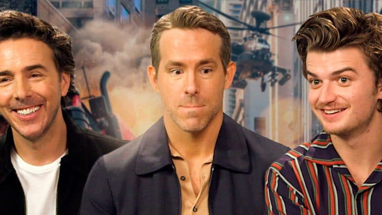

Confira o elenco da série live-action de Avatar: A Lenda de Aang
postado em 11/08/2021
Os atores de Aang, Katara, Sokka e Zuko foram revelados
Leia maisRyan Reynolds e Joe Keery falam sobre Free Guy, K-pop, GTA e maldições
postado em 12/08/2021 Free Guy – Assumindo o Controle vai finalmente estrear e a Guilherme Marcello teve a oportunidade de conversar com o elenco e o diretor do filme.
Leia mais
Todos os direitos reservados © - Guilherme Marcello